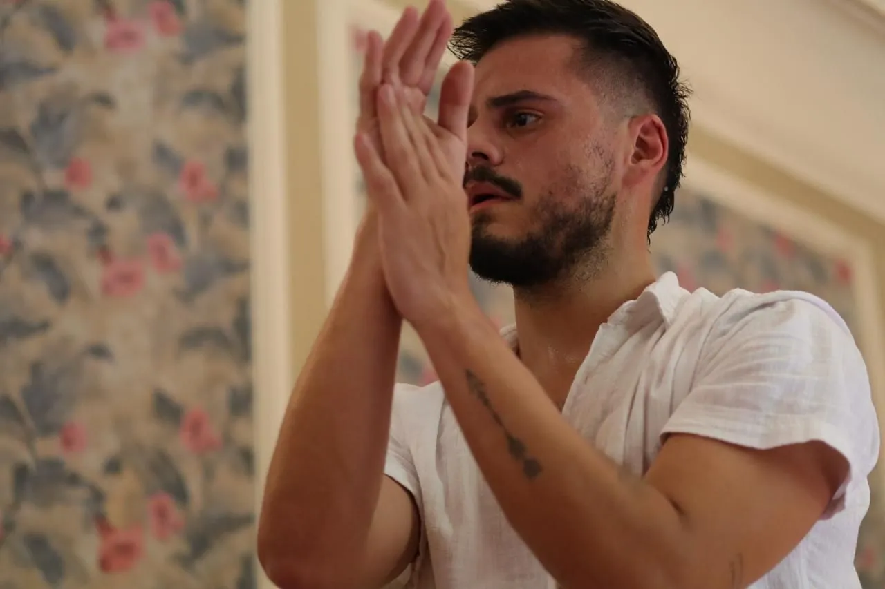

Marcus Moreno

Encontros Efêmeros
Desde 2016
Este é um procedimento de partilha que tem como principal objetivo reconhecer afetos e modos de criação em dança.
A partir de uma ideia lançada, os dois artistas dividem a cena em um encontro inédito, construindo juntos a dança deste dia.
Entrevistas-performativas
Série em vídeo · conversas-dançadas
As entrevistas-performativas, que podem ser descritas também como conversas-dançadas, são eventos que intuem a criação de um espaço voltado à troca de saberes pela experiência do convívio, decorrente de ações simples (previamente organizadas, mas abertas à imprevisibilidade) que apontam para o despertar de um campo de singularidade e partilha.
São encontros pautados em uma metodologia fluida e em permanente transformação, que oportunizam formas de escuta e contato mais aproximados, envolvendo o artista convidado em uma experiência estética, em trocas que incluem nas dinâmicas de interação e de discussão conhecimentos que sejam da ordem do sensível.
Este procedimento vem sendo desenvolvido por Marcus Moreno nos últimos anos a partir de proposição de Marisa Lambert, que o orientou no Mestrado em Artes da Cena na Unicamp.
A série
Seis conversas-dançadas com artistas da cena contemporânea.

Danças de Presente

Com o anseio pelo agradecimento, esta série de improvisações foram criadas como desdobramentos das memórias vindas das entrevistas-performativas, bem como de encontros anteriores a ela, de seu processo de elaboração e daquilo que cada um desses artistas entrevistados me inspira e atravessa meu mover.
Quatro danças em vídeo. Escolha um nome para assistir.